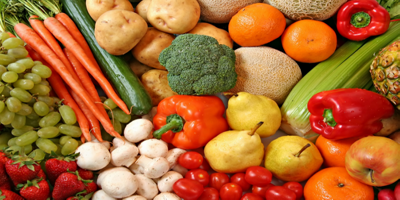
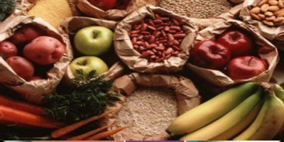
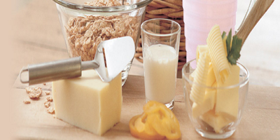
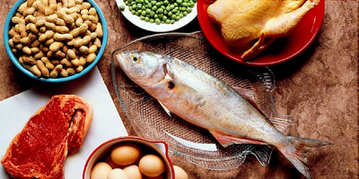
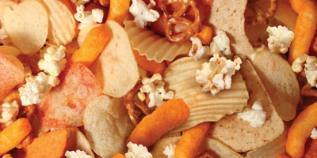

Diet and Nutrition

Diet and nutrition
Eating well and having a healthy lifestyle can help us feel our best difference to our long-term health
The eatwell plate applies to most people. Whether they're a healthy weight or overweight. Whether they eat meat or are vegetarian, and if applies to people of all ethnic orgins.
Fruit and Vegetables
Eat plenty, all kinds are useful.
If you do not eat a lot of fruit and vegetables at the moment, work up gradually - one potion at a time.
Aim to eat at least five potions of a variety of fruit and veg each day. You could have:
- A piece of fruit (e.g. an apple or banana or 2 small fruits such as plums
- A small glass of unsweetened fruit juice
- Or 2 tablespoons of vegetables
Carbohydrates
You need to eat plenty from this group
Most of us should eat more starchy food- this need to include one starchy food with each of your main meals. This you could:
- Start the day with a wholegrain breakfast cereal - choose one that is lower in salt and sugars.
- Have a sandwich for lunch
- Round of the day with potatoes, pasta or rise as a base for your evening meal
Should have a lot of variety and include wholegrain types whenever you can
Dairy and alternatives
Use moderate amounts from this group and try to use lower fat versions.
Try to eat some milk and dairy food - such as cheese and milk and fromage frais - everyday
- 2/3 - 1 pint of milk or equivalent of milk a day.
- Low fat or diet yogurts, or fromage frais make a nice dessert or alternative to cream
- 1/3 pint milk = small pot yoghurt = an matchbox sized piece of cheese.
Try to have:
These are very good sources of protein and vitamins, and also an very important sources of calcium, which helps to make bone strong.
Proteins
Use small amounts from this group, 2 portions a day. The group includes meat , fish , poultry , nuts , eggs, beans and pulses
Have meat as lean as possible by trimming all of the visible fat. Eat poultry without the skin and fish which is baked , steamed or grilled instead of fried.
Beans, peas and lentils (which are all types of pulses) are very good alternatives to meat because they're naturally very low in fat, and they're high in fibre, protein and vitamins and minerals.
Fatty foods
Eat foods high in fat, salt and sugar less often and in small amounts as possible.
These foods include chocolate, cakes, biscuits, sugary soft drinks, butter, ghee and ice cream
They're not needed in the diet and so should be eaten less often and in smaller amounts.
For more information about diet and nutrition
Visit NHS Choices Eatwell Guide